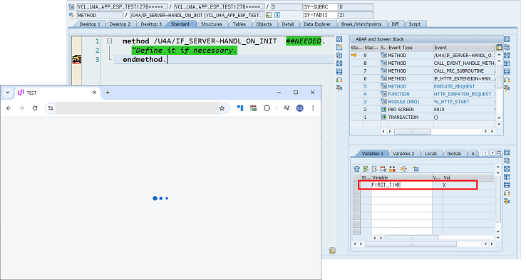

Use init pre-screen event
화면이 호출전되기 전에 HANDLE_ON_INIT 이벤트를 호출할 수 있습니다.
해당 기능을 활성화하면 메인 애플리케이션 실행 시, 화면이 출력되기 전에 HANDLE_ON_INIT 이벤트가 호출됩니다.
이 과정에서 FIRST_TIME 파라미터에는 첫 호출 여부를 나타내는 값인 ABAP_TRUE가 전달됩니다.
이 과정에서 FIRST_TIME 파라미터에는 첫 호출 여부를 나타내는 값인 ABAP_TRUE가 전달됩니다.

화면이 출력된 이후에는 기존의 HANDLE_ON_INIT이 다시 수행되며, 이때 FIRST_TIME 파라미터에는 값이 전달되지 않습니다.

이 기능을 활용하면 화면이 표시되기 전에 기본 페이지를 설정하는 등의 초기화 로직을 구현할 수 있습니다.
주의사항: 화면 구성 전에 INIT 호출 시 대량의 데이터를 처리해야 하는 경우, 화면 출력 이후 수행되는 HANDLE_ON_INIT에서 대량의 데이터가 전송될 수 있습니다.
이를 고려하여 데이터 처리 로직을 적절히 분배하는 것이 필요합니다.
이를 고려하여 데이터 처리 로직을 적절히 분배하는 것이 필요합니다.